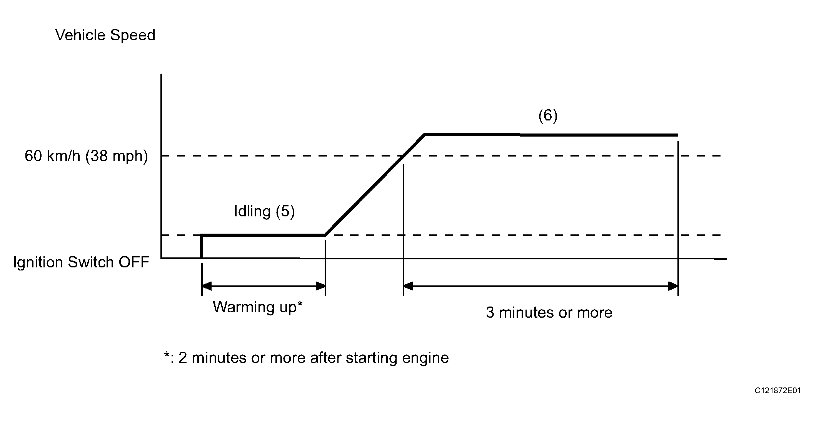

Confirmation Driving Pattern

Courtesy of © TOYOTA, LICENSE AGREEMENT TMS1002HINT:
This confirmation driving pattern is used in the "PERFORM CONFIRMATION DRIVING PATTERN" procedure of the following diagnostic troubleshooting procedure.
- Connect the intelligent tester to the DLC3.
- Turn the ignition switch ON and turn the tester ON.
- Clear DTCs (see DTC CHECK / CLEAR ).
- Start the engine.
- Allow the engine to idle until the engine coolant temperature reaches 40°C (104°F).
Drive the vehicle at a speed of more than 60 km/h (38 mph) for 3 minutes or more.
NOTE:
If the conditions in this test are not strictly followed, malfunctions may not be detected.